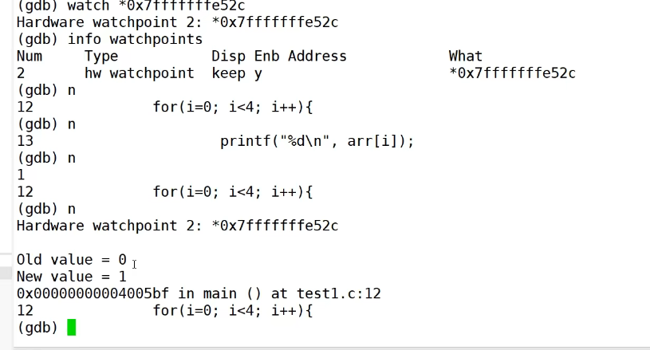

<!DOCTYPE html>


<html lang="zh-CN">
  

    <head>
      <meta charset="utf-8" />
        
      <meta name="description" content="Over top clear mind" />
      
      <meta
        name="viewport"
        content="width=device-width, initial-scale=1, maximum-scale=1"
      />
      <title>了解GDB |  摸鱼且很菜blog</title>
  <meta name="generator" content="hexo-theme-ayer">
      
      <link rel="shortcut icon" href="/yu_head.gif" />
       
<link rel="stylesheet" href="/dist/main.css">

      
<link rel="stylesheet" href="/css/fonts/remixicon.css">

      
<link rel="stylesheet" href="/css/custom.css">
 
      <script src="https://cdn.staticfile.org/pace/1.2.4/pace.min.js"></script>
       
 

      <link
        rel="stylesheet"
        href="https://cdn.jsdelivr.net/npm/@sweetalert2/theme-bulma@5.0.1/bulma.min.css"
      />
      <script src="https://cdn.jsdelivr.net/npm/sweetalert2@11.0.19/dist/sweetalert2.min.js"></script>

      <!-- mermaid -->
      
      <style>
        .swal2-styled.swal2-confirm {
          font-size: 1.6rem;
        }
      </style>
    </head>
  </html>
</html>


<body>
  <div id="app">
    
      <canvas class="fireworks"></canvas>
      <style>
        .fireworks {
          position: fixed;
          left: 0;
          top: 0;
          z-index: 99999;
          pointer-events: none;
        }
      </style>
      
      
    <main class="content on">
      <section class="outer">
  <article
  id="post-了解GDB"
  class="article article-type-post"
  itemscope
  itemprop="blogPost"
  data-scroll-reveal
>
  <div class="article-inner">
    
    <header class="article-header">
       
<h1 class="article-title sea-center" style="border-left:0" itemprop="name">
  了解GDB
</h1>
 

      
    </header>
     
    <div class="article-meta">
      <a href="/2023/04/02/%E4%BA%86%E8%A7%A3GDB/" class="article-date">
  <time datetime="2023-04-02T15:25:39.000Z" itemprop="datePublished">2023-04-02</time>
</a>   
<div class="word_count">
    <span class="post-time">
        <span class="post-meta-item-icon">
            <i class="ri-quill-pen-line"></i>
            <span class="post-meta-item-text"> 字数统计:</span>
            <span class="post-count">680</span>
        </span>
    </span>

    <span class="post-time">
        &nbsp; | &nbsp;
        <span class="post-meta-item-icon">
            <i class="ri-book-open-line"></i>
            <span class="post-meta-item-text"> 阅读时长≈</span>
            <span class="post-count">2 分钟</span>
        </span>
    </span>
</div>
 
    </div>
      
    <div class="tocbot"></div>


  
    <div class="article-entry" itemprop="articleBody">
       
  <span id="more"></span>
<p>GDB</p>
<p>The GNU Project Debugger</p>
<p></p>
<p>GDB支持哪些语言</p>
<p></p>
<blockquote>
<p>gdb —version</p>
</blockquote>
<h2 id="基本命令与快速开始"><a href="#基本命令与快速开始" class="headerlink" title="基本命令与快速开始"></a>基本命令与快速开始</h2><p></p>
<p>gcc 编译</p>
<blockquote>
<p>gcc test.c</p>
</blockquote>
<p>运行</p>
<blockquote>
<p>./a.out</p>
</blockquote>
<h3 id="添加调试选项"><a href="#添加调试选项" class="headerlink" title="添加调试选项"></a>添加调试选项</h3><blockquote>
<p>gcc -g test.c</p>
</blockquote>
<p>运行</p>
<blockquote>
<p>gdb ./a.out</p>
</blockquote>
<p></p>
<p>此时已经进入到gdb当中</p>
<p>运行</p>
<blockquote>
<p>r 或者 run</p>
</blockquote>
<p>退出gdb模式</p>
<blockquote>
<p>quit</p>
</blockquote>
<h2 id="了解常用的十几种指令"><a href="#了解常用的十几种指令" class="headerlink" title="了解常用的十几种指令"></a>了解常用的十几种指令</h2><blockquote>
<p>man gdb</p>
</blockquote>
<h3 id="打断点"><a href="#打断点" class="headerlink" title="打断点"></a>打断点</h3><ul>
<li><p>在某个函数前打断点</p>
<ul>
<li><blockquote>
<p>b main （在main函数前打断点）b:break</p>
</blockquote>
</li>
</ul>
</li>
<li><p>在某一行打断点</p>
<ul>
<li><blockquote>
<p>b 9 (在第九行打断点)</p>
</blockquote>
</li>
</ul>
</li>
<li><p>删除断点</p>
<ul>
<li>可以使用 clear 或者 delete 命令进行删除</li>
</ul>
</li>
</ul>
<figure class="highlight plaintext"><table><tr><td class="gutter"><pre><span class="line">1</span><br><span class="line">2</span><br><span class="line">3</span><br><span class="line">4</span><br><span class="line">5</span><br></pre></td><td class="code"><pre><span class="line">(gdb) clear location</span><br><span class="line"></span><br><span class="line">// 参数 location 通常为某一行代码的行号或者某个具体的函数名。当 location 参数为某个函数的函数名时，表示删除位于该函数入口处的所有断点。</span><br><span class="line">ex:</span><br><span class="line">clear hello_world.cc:8</span><br></pre></td></tr></table></figure>
<ul>
<li>使用delete</li>
</ul>
<figure class="highlight plaintext"><table><tr><td class="gutter"><pre><span class="line">1</span><br><span class="line">2</span><br></pre></td><td class="code"><pre><span class="line">delete [breakpoints] [num]</span><br><span class="line">// breakpoints 参数可有可无，num 参数为指定断点的编号，可以使用`info b`获取index，其可以是 delete 删除某一个断点，而非全部。</span><br></pre></td></tr></table></figure>
<h3 id="查看源代码"><a href="#查看源代码" class="headerlink" title="查看源代码"></a>查看源代码</h3><blockquote>
<p>list</p>
</blockquote>
<p></p>
<h4 id="获取断点相关信息"><a href="#获取断点相关信息" class="headerlink" title="获取断点相关信息"></a>获取断点相关信息</h4><blockquote>
<p>info b</p>
</blockquote>
<p></p>
<p>在有断点的情况下运行</p>
<blockquote>
<p>r</p>
</blockquote>
<p></p>
<p>发现断点生效</p>
<h3 id="单步调试"><a href="#单步调试" class="headerlink" title="单步调试"></a>单步调试</h3><blockquote>
<p>n (next)</p>
</blockquote>
<p></p>
<h3 id="打印变量信息-print"><a href="#打印变量信息-print" class="headerlink" title="打印变量信息 print"></a>打印变量信息 print</h3><p></p>
<p>此时，想查看数组里面的值，变量的地址</p>
<p>print p</p>
<blockquote>
<p>p arr[0]</p>
</blockquote>
<p></p>
<h3 id="走进某个函数-step"><a href="#走进某个函数-step" class="headerlink" title="走进某个函数 step"></a>走进某个函数 step</h3><p></p>
<p></p>
<p>发现程序跳到第4行，进入到这个函数中，再继续运行</p>
<p></p>
<p></p>
<h2 id="GDB的一些技巧"><a href="#GDB的一些技巧" class="headerlink" title="GDB的一些技巧"></a>GDB的一些技巧</h2><h3 id="通过shell-调用终端的命令"><a href="#通过shell-调用终端的命令" class="headerlink" title="通过shell 调用终端的命令"></a>通过shell 调用终端的命令</h3><p></p>
<h3 id="日志功能"><a href="#日志功能" class="headerlink" title="日志功能"></a>日志功能</h3><blockquote>
<p>set logging  on</p>
</blockquote>
<p>日志输出到gdb.txt</p>
<p></p>
<h3 id="watch-point-观察点"><a href="#watch-point-观察点" class="headerlink" title="watch point 观察点"></a>watch point 观察点</h3><p>观察变量是否发生变化</p>
<p>比如循环变量i ，将i的地址设置成 watch point</p>
<p></p>
<p></p>
<p></p>
<p>变量发生了变化</p>
<p></p>
<h3 id="catch-point-捕捉点"><a href="#catch-point-捕捉点" class="headerlink" title="catch point 捕捉点"></a>catch point 捕捉点</h3><p>捕捉异常点</p>
<h3 id="check-point-快照"><a href="#check-point-快照" class="headerlink" title="check point 快照"></a>check point 快照</h3><h2 id="调试程序"><a href="#调试程序" class="headerlink" title="调试程序"></a>调试程序</h2><p>往往调试的是core文件，而不是二进制文件</p>
<ul>
<li>调试一个正在运行的进程</li>
</ul>
<h3 id="调试core文件"><a href="#调试core文件" class="headerlink" title="调试core文件"></a>调试core文件</h3><p></p>
<p></p>
<p>segmentation fault 发生了段错误</p>
<p>访问了非法内存</p>
<p>查看core相关的内容</p>
<ul>
<li>core文件不会自动生成，shell做了一些限制</li>
</ul>
<blockquote>
<p>man ulimit</p>
<p>ulimit -a</p>
</blockquote>
<p></p>
<p>修改core文件大小限制 <code>core file size</code></p>
<figure class="highlight plaintext"><table><tr><td class="gutter"><pre><span class="line">1</span><br></pre></td><td class="code"><pre><span class="line">ulimit -c unlimited</span><br></pre></td></tr></table></figure>
<p></p>
<p></p>
<p>发现core file size 已被修改</p>
<ul>
<li>然后再运行<code>./a.out</code></li>
<li>发现有个core dumped，同时生成了core文件<code>core.19761</code></li>
</ul>
<p></p>
<h4 id="根据core文件查看，为何程序挂掉"><a href="#根据core文件查看，为何程序挂掉" class="headerlink" title="根据core文件查看，为何程序挂掉"></a>根据core文件查看，为何程序挂掉</h4><figure class="highlight plaintext"><table><tr><td class="gutter"><pre><span class="line">1</span><br></pre></td><td class="code"><pre><span class="line">gdb ./a.out core.19761</span><br></pre></td></tr></table></figure>
<p></p>
<p>里面说，再第七行<code>*temp=10</code>报错 段错误</p>
<p>找到了发生段错误的地方</p>
<h2 id="查询man手册"><a href="#查询man手册" class="headerlink" title="查询man手册"></a>查询man手册</h2><h3 id="如何调试一个正在运行的进程"><a href="#如何调试一个正在运行的进程" class="headerlink" title="如何调试一个正在运行的进程"></a>如何调试一个正在运行的进程</h3><ul>
<li>通过进程号访问</li>
<li>查询程序进程号</li>
</ul>
<figure class="highlight plaintext"><table><tr><td class="gutter"><pre><span class="line">1</span><br></pre></td><td class="code"><pre><span class="line">./a.out &amp;</span><br></pre></td></tr></table></figure>
<ul>
<li>gdb通过进程号访问程序</li>
</ul>
<figure class="highlight plaintext"><table><tr><td class="gutter"><pre><span class="line">1</span><br></pre></td><td class="code"><pre><span class="line">gdb -p [process-id]</span><br></pre></td></tr></table></figure>
<p></p>
<p></p>
<p>让这个程序后台执行。返回一个进程号。</p>
<ul>
<li>通过进程号访问正在运行的进程</li>
</ul>
<p></p>
<p></p>
<p></p>
 
      <!-- reward -->
      
    </div>
    

    <!-- copyright -->
    
    <div class="declare">
      <ul class="post-copyright">
        <li>
          <i class="ri-copyright-line"></i>
          <strong>版权声明： </strong>
          
          本博客所有文章除特别声明外，著作权归作者所有。转载请注明出处！
          
        </li>
      </ul>
    </div>
    
    <footer class="article-footer">
       
<div class="share-btn">
      <span class="share-sns share-outer">
        <i class="ri-share-forward-line"></i>
        分享
      </span>
      <div class="share-wrap">
        <i class="arrow"></i>
        <div class="share-icons">
          
          <a class="weibo share-sns" href="javascript:;" data-type="weibo">
            <i class="ri-weibo-fill"></i>
          </a>
          <a class="weixin share-sns wxFab" href="javascript:;" data-type="weixin">
            <i class="ri-wechat-fill"></i>
          </a>
          <a class="qq share-sns" href="javascript:;" data-type="qq">
            <i class="ri-qq-fill"></i>
          </a>
          <a class="douban share-sns" href="javascript:;" data-type="douban">
            <i class="ri-douban-line"></i>
          </a>
          <!-- <a class="qzone share-sns" href="javascript:;" data-type="qzone">
            <i class="icon icon-qzone"></i>
          </a> -->
          
          <a class="facebook share-sns" href="javascript:;" data-type="facebook">
            <i class="ri-facebook-circle-fill"></i>
          </a>
          <a class="twitter share-sns" href="javascript:;" data-type="twitter">
            <i class="ri-twitter-fill"></i>
          </a>
          <a class="google share-sns" href="javascript:;" data-type="google">
            <i class="ri-google-fill"></i>
          </a>
        </div>
      </div>
</div>

<div class="wx-share-modal">
    <a class="modal-close" href="javascript:;"><i class="ri-close-circle-line"></i></a>
    <p>扫一扫，分享到微信</p>
    <div class="wx-qrcode">
      
    </div>
</div>

<div id="share-mask"></div>  
  <ul class="article-tag-list" itemprop="keywords"><li class="article-tag-list-item"><a class="article-tag-list-link" href="/tags/GDB/" rel="tag">GDB</a></li></ul>

    </footer>
  </div>

   
  <nav class="article-nav">
    
    
      <a href="/2023/03/26/Jacobi%E7%9F%A9%E9%98%B5%E7%90%86%E8%A7%A3/" class="article-nav-link">
        <strong class="article-nav-caption">下一篇</strong>
        <div class="article-nav-title">Jacobi矩阵理解</div>
      </a>
    
  </nav>

  
   
    
    <script src="https://cdn.staticfile.org/twikoo/1.4.18/twikoo.all.min.js"></script>
    <div id="twikoo" class="twikoo"></div>
    <script>
        twikoo.init({
            envId: ""
        })
    </script>
 
</article>

</section>
      <footer class="footer">
  <div class="outer">
    <ul>
      <li>
        Copyrights &copy;
        2020-2025
        <i class="ri-heart-fill heart_icon"></i> cyg
      </li>
    </ul>
    <ul>
      <li>
        
      </li>
    </ul>
    <ul>
      <li>
        
        
        <span>
  <span><i class="ri-user-3-fill"></i>访问人数:<span id="busuanzi_value_site_uv"></span></span>
  <span class="division">|</span>
  <span><i class="ri-eye-fill"></i>浏览次数:<span id="busuanzi_value_page_pv"></span></span>
</span>
        
      </li>
    </ul>
    <ul>
      
    </ul>
    <ul>
      
    </ul>
    <ul>
      <li>
        <!-- cnzz统计 -->
        
        <script type="text/javascript" src='https://s9.cnzz.com/z_stat.php?id=1278069914&amp;web_id=1278069914'></script>
        
      </li>
    </ul>
  </div>
</footer>    
    </main>
    <div class="float_btns">
      <div class="totop" id="totop">
  <i class="ri-arrow-up-line"></i>
</div>

<div class="todark" id="todark">
  <i class="ri-moon-line"></i>
</div>

    </div>
    <aside class="sidebar on">
      <button class="navbar-toggle"></button>
<nav class="navbar">
  
  <div class="logo">
    <a href="/"></a>
  </div>
  
  <ul class="nav nav-main">
    
    <li class="nav-item">
      <a class="nav-item-link" href="/">主页</a>
    </li>
    
    <li class="nav-item">
      <a class="nav-item-link" href="/archives">归档</a>
    </li>
    
    <li class="nav-item">
      <a class="nav-item-link" href="/tags">标签</a>
    </li>
    
    <li class="nav-item">
      <a class="nav-item-link" href="/friends">神秘链接</a>
    </li>
    
    <li class="nav-item">
      <a class="nav-item-link" href="/about">关于我</a>
    </li>
    
  </ul>
</nav>
<nav class="navbar navbar-bottom">
  <ul class="nav">
    <li class="nav-item">
      
      <a class="nav-item-link nav-item-search"  title="搜索">
        <i class="ri-search-line"></i>
      </a>
      
      
      <a class="nav-item-link" target="_blank" href="/atom.xml" title="RSS Feed">
        <i class="ri-rss-line"></i>
      </a>
      
    </li>
  </ul>
</nav>
<div class="search-form-wrap">
  <div class="local-search local-search-plugin">
  <input type="search" id="local-search-input" class="local-search-input" placeholder="Search...">
  <div id="local-search-result" class="local-search-result"></div>
</div>
</div>
    </aside>
    <div id="mask"></div>

<!-- #reward -->
<div id="reward">
  <span class="close"><i class="ri-close-line"></i></span>
  <p class="reward-p"><i class="ri-cup-line"></i></p>
  <div class="reward-box">
    
    
  </div>
</div>
    
<script src="/js/jquery-3.6.0.min.js"></script>
 
<script src="/js/lazyload.min.js"></script>

<!-- Tocbot -->
 
<script src="/js/tocbot.min.js"></script>

<script>
  tocbot.init({
    tocSelector: ".tocbot",
    contentSelector: ".article-entry",
    headingSelector: "h1, h2, h3, h4, h5, h6",
    hasInnerContainers: true,
    scrollSmooth: true,
    scrollContainer: "main",
    positionFixedSelector: ".tocbot",
    positionFixedClass: "is-position-fixed",
    fixedSidebarOffset: "auto",
  });
</script>

<script src="https://cdn.staticfile.org/jquery-modal/0.9.2/jquery.modal.min.js"></script>
<link
  rel="stylesheet"
  href="https://cdn.staticfile.org/jquery-modal/0.9.2/jquery.modal.min.css"
/>
<script src="https://cdn.staticfile.org/justifiedGallery/3.8.1/js/jquery.justifiedGallery.min.js"></script>

<script src="/dist/main.js"></script>

<!-- ImageViewer -->
 <!-- Root element of PhotoSwipe. Must have class pswp. -->
<div class="pswp" tabindex="-1" role="dialog" aria-hidden="true">

    <!-- Background of PhotoSwipe. 
         It's a separate element as animating opacity is faster than rgba(). -->
    <div class="pswp__bg"></div>

    <!-- Slides wrapper with overflow:hidden. -->
    <div class="pswp__scroll-wrap">

        <!-- Container that holds slides. 
            PhotoSwipe keeps only 3 of them in the DOM to save memory.
            Don't modify these 3 pswp__item elements, data is added later on. -->
        <div class="pswp__container">
            <div class="pswp__item"></div>
            <div class="pswp__item"></div>
            <div class="pswp__item"></div>
        </div>

        <!-- Default (PhotoSwipeUI_Default) interface on top of sliding area. Can be changed. -->
        <div class="pswp__ui pswp__ui--hidden">

            <div class="pswp__top-bar">

                <!--  Controls are self-explanatory. Order can be changed. -->

                <div class="pswp__counter"></div>

                <button class="pswp__button pswp__button--close" title="Close (Esc)"></button>

                <button class="pswp__button pswp__button--share" style="display:none" title="Share"></button>

                <button class="pswp__button pswp__button--fs" title="Toggle fullscreen"></button>

                <button class="pswp__button pswp__button--zoom" title="Zoom in/out"></button>

                <!-- Preloader demo http://codepen.io/dimsemenov/pen/yyBWoR -->
                <!-- element will get class pswp__preloader--active when preloader is running -->
                <div class="pswp__preloader">
                    <div class="pswp__preloader__icn">
                        <div class="pswp__preloader__cut">
                            <div class="pswp__preloader__donut"></div>
                        </div>
                    </div>
                </div>
            </div>

            <div class="pswp__share-modal pswp__share-modal--hidden pswp__single-tap">
                <div class="pswp__share-tooltip"></div>
            </div>

            <button class="pswp__button pswp__button--arrow--left" title="Previous (arrow left)">
            </button>

            <button class="pswp__button pswp__button--arrow--right" title="Next (arrow right)">
            </button>

            <div class="pswp__caption">
                <div class="pswp__caption__center"></div>
            </div>

        </div>

    </div>

</div>

<link rel="stylesheet" href="https://cdn.staticfile.org/photoswipe/4.1.3/photoswipe.min.css">
<link rel="stylesheet" href="https://cdn.staticfile.org/photoswipe/4.1.3/default-skin/default-skin.min.css">
<script src="https://cdn.staticfile.org/photoswipe/4.1.3/photoswipe.min.js"></script>
<script src="https://cdn.staticfile.org/photoswipe/4.1.3/photoswipe-ui-default.min.js"></script>

<script>
    function viewer_init() {
        let pswpElement = document.querySelectorAll('.pswp')[0];
        let $imgArr = document.querySelectorAll(('.article-entry img:not(.reward-img)'))

        $imgArr.forEach(($em, i) => {
            $em.onclick = () => {
                // slider展开状态
                // todo: 这样不好，后面改成状态
                if (document.querySelector('.left-col.show')) return
                let items = []
                $imgArr.forEach(($em2, i2) => {
                    let img = $em2.getAttribute('data-idx', i2)
                    let src = $em2.getAttribute('data-target') || $em2.getAttribute('src')
                    let title = $em2.getAttribute('alt')
                    // 获得原图尺寸
                    const image = new Image()
                    image.src = src
                    items.push({
                        src: src,
                        w: image.width || $em2.width,
                        h: image.height || $em2.height,
                        title: title
                    })
                })
                var gallery = new PhotoSwipe(pswpElement, PhotoSwipeUI_Default, items, {
                    index: parseInt(i)
                });
                gallery.init()
            }
        })
    }
    viewer_init()
</script> 
<!-- MathJax -->
 <script type="text/x-mathjax-config">
  MathJax.Hub.Config({
      tex2jax: {
          inlineMath: [ ['$','$'], ["\\(","\\)"]  ],
          processEscapes: true,
          skipTags: ['script', 'noscript', 'style', 'textarea', 'pre', 'code']
      }
  });

  MathJax.Hub.Queue(function() {
      var all = MathJax.Hub.getAllJax(), i;
      for(i=0; i < all.length; i += 1) {
          all[i].SourceElement().parentNode.className += ' has-jax';
      }
  });
</script>

<script src="https://cdn.staticfile.org/mathjax/2.7.7/MathJax.js"></script>
<script src="https://cdn.staticfile.org/mathjax/2.7.7/config/TeX-AMS-MML_HTMLorMML-full.js"></script>
<script>
  var ayerConfig = {
    mathjax: true,
  };
</script>

<!-- Katex -->

<!-- busuanzi  -->
 
<script src="/js/busuanzi-2.3.pure.min.js"></script>
 
<!-- ClickLove -->

<!-- ClickBoom1 -->

<script src="https://cdn.staticfile.org/animejs/3.2.1/anime.min.js"></script>

<script src="/js/clickBoom1.js"></script>
 
<!-- ClickBoom2 -->

<!-- CodeCopy -->
 
<link rel="stylesheet" href="/css/clipboard.css">
 <script src="https://cdn.staticfile.org/clipboard.js/2.0.10/clipboard.min.js"></script>
<script>
  function wait(callback, seconds) {
    var timelag = null;
    timelag = window.setTimeout(callback, seconds);
  }
  !function (e, t, a) {
    var initCopyCode = function(){
      var copyHtml = '';
      copyHtml += '<button class="btn-copy" data-clipboard-snippet="">';
      copyHtml += '<i class="ri-file-copy-2-line"></i><span>COPY</span>';
      copyHtml += '</button>';
      $(".highlight .code pre").before(copyHtml);
      $(".article pre code").before(copyHtml);
      var clipboard = new ClipboardJS('.btn-copy', {
        target: function(trigger) {
          return trigger.nextElementSibling;
        }
      });
      clipboard.on('success', function(e) {
        let $btn = $(e.trigger);
        $btn.addClass('copied');
        let $icon = $($btn.find('i'));
        $icon.removeClass('ri-file-copy-2-line');
        $icon.addClass('ri-checkbox-circle-line');
        let $span = $($btn.find('span'));
        $span[0].innerText = 'COPIED';
        
        wait(function () { // 等待两秒钟后恢复
          $icon.removeClass('ri-checkbox-circle-line');
          $icon.addClass('ri-file-copy-2-line');
          $span[0].innerText = 'COPY';
        }, 2000);
      });
      clipboard.on('error', function(e) {
        e.clearSelection();
        let $btn = $(e.trigger);
        $btn.addClass('copy-failed');
        let $icon = $($btn.find('i'));
        $icon.removeClass('ri-file-copy-2-line');
        $icon.addClass('ri-time-line');
        let $span = $($btn.find('span'));
        $span[0].innerText = 'COPY FAILED';
        
        wait(function () { // 等待两秒钟后恢复
          $icon.removeClass('ri-time-line');
          $icon.addClass('ri-file-copy-2-line');
          $span[0].innerText = 'COPY';
        }, 2000);
      });
    }
    initCopyCode();
  }(window, document);
</script>
 
<!-- CanvasBackground -->

<script>
  if (window.mermaid) {
    mermaid.initialize({ theme: "forest" });
  }
</script>


    
    <div id="music">
    
    
    
    <iframe frameborder="no" border="1" marginwidth="0" marginheight="0" width="200" height="52"
        src="//music.163.com/outchain/player?type=2&id=1465288702&auto=0&height=32"></iframe>
</div>

<style>
    #music {
        position: fixed;
        right: 15px;
        bottom: 0;
        z-index: 998;
    }
</style>
    
    

  </div>
<script src="/live2dw/lib/L2Dwidget.min.js?094cbace49a39548bed64abff5988b05"></script><script>L2Dwidget.init({"pluginModelPath":"assets/","model":{"jsonPath":"kesyoban"},"display":{"position":"right","width":300,"height":600},"mobile":{"show":true},"rect":"opacity:0.7","log":false,"pluginJsPath":"lib/","pluginRootPath":"live2dw/","tagMode":false});</script></body>

</html>